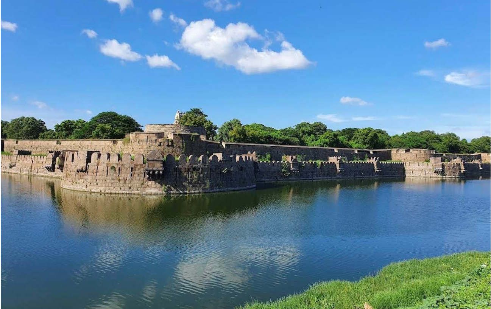

Vellore Fort

Vellore Fort, built in the 16th century by Vijayanagara chieftains, is a massive granite fortress in Tamil Nadu spreading over 133 acres.
Famous for its deep moat once home to 10,000 crocodiles, the fort features double walls, bastions, and robust military architecture.
It houses religious sites including Jalakandeswarar Temple, a mosque, and a church, plus museums and palaces.
The fort witnessed key historical events and ruled by Vijayanagara, Bijapur Sultanate, Marathas, and British, serving as a prison for notable figures like Tipu Sultan’s family.
It remains a prominent cultural and historical landmark.